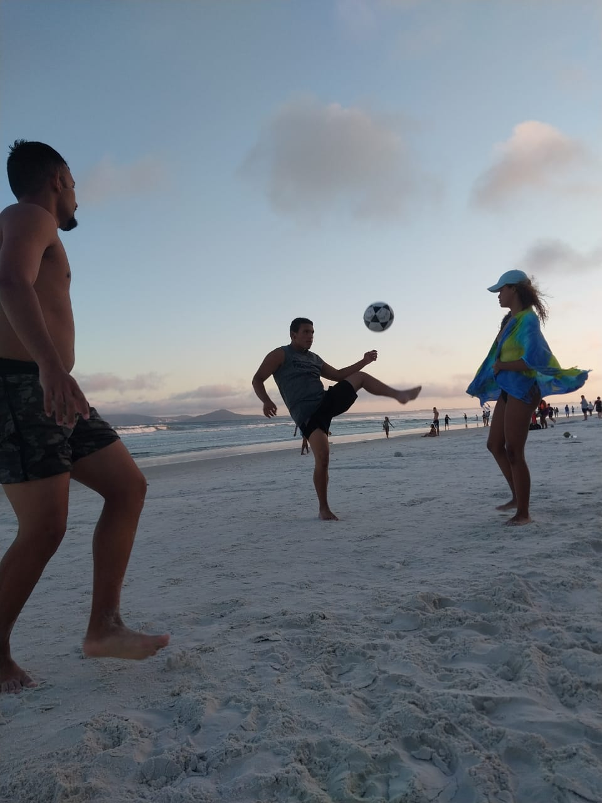

Um grupo de alunos da escola Feliciano Sodré protagonizou uma cena inusitada e criativa. Após uma série de apresentações realizadas na quadra da escola, alguns estudantes decidiram improvisar um jogo de futmesa dentro da sala de aula, utilizando mesas escolares e uma bola.
De acordo com relatos de outros estudantes e até mesmo de alguns professores, o episódio começou de forma espontânea. “Terminamos nossas apresentações na quadra, e enquanto esperávamos as apresentações acabar, pensamos em jogar futmesa para passar o tempo”, contou um dos alunos envolvidos. A mesa utilizada foi posicionada estrategicamente, e os jogadores usaram regras similares às do esporte oficial, adaptadas às limitações do ambiente.
Alunos causam incidente inusitado que gerou polêmica na escola Feliciano Sodré. Um grupo de alunos foi flagrado praticando tiro ao alvo com armas de airsoft dentro de uma sala de aula durante um intervalo entre as atividades escolares. O episódio levantou debates sobre segurança, comportamento estudantil e os limites do uso de objetos recreativos no ambiente escolar.
O evento ocorreu em uma manhã aparentemente tranquila. Aproveitando o intervalo, os alunos montaram um pequeno "circuito" de tiro ao alvo improvisado, utilizando mochilas e carteiras como obstáculos e alvos. A brincadeira chamou atenção de colegas e, rapidamente, vídeos começaram a circular nas redes sociais.
"Estávamos apenas nos divertindo, sem intenção de machucar ou desrespeitar ninguém." disse um dos estudantes envolvidos, que preferiu não se identificar.
um grupo de amigos com uma filosofia peculiar: todo lugar é lugar de Alta. Qualquer espaço da quadra ao estacionamento, da sala de aula à fila do mercado, se tornava palco do jogo. Alta era o único esporte em que a gravidade parecia inimiga, e a bola, um tesouro que jamais poderia tocar o chão. Uns usavam o pé, outros o joelho, e os mais ousados, até a cabeça. Tudo valia, desde que a bola seguisse voando. Era uma sinfonia de caos coordenado, acompanhada de risadas e alguns gritos de desespero quando a bola ameaçava cair.
E o que dizer do lendário treinador MT Machado? Um nome que soava mais sério do que o próprio jogo. Ele nunca perdeu uma partida. porque a lenda era imparável.